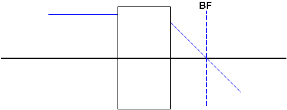
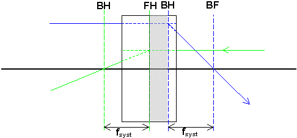
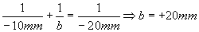
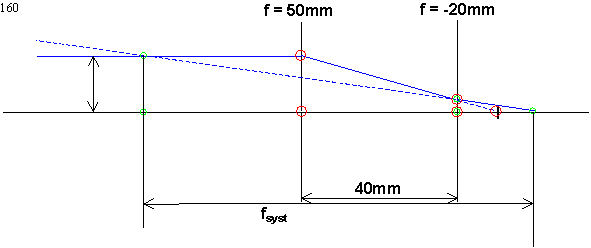
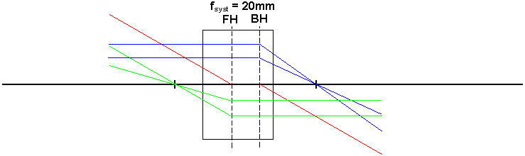
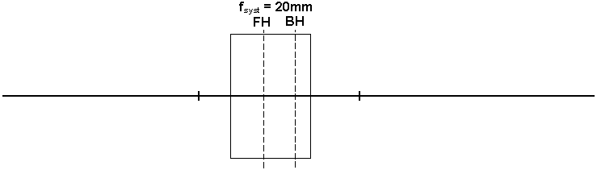

Huvudplansbegreppet (nivå 2)
De formler och rittekniker vi hittills tagit fram för tunna linser är egentligen bara en approxiation. För att beskriva tjockare linser och framför allt linssystem som objektiv till kameror eller CCD'er skulle vi egentligen behöva räkna på vad som händer i varje yta för sig. Det skulle i exvis en TVkamera-lins bli ett trettiotal ytor!
Det finns ett koncept som gör att man tar sig runt nästan alla dessa svårigheter. Konceptet kallas huvudplan, och är en metod att hitta två plan från vilka man kan räkna objekts- och bild-avstånd så att
linsformeln och alla dess konstruktionsregler kan användas direkt.Strategin i detta avsnitt är att:
Börja med att ta definiera huvudplan och därefter
Visa hur man kan konstruera fram var de ligger i några praktiska fall, och sist
Visa hur man använder dem praktiskt:
Definition
Bakre fokalplanet (BF) ligger där bilden av ett avlägset objekt hamnar, dvs där strålar parallella med symmetriaxeln bryts ihop mot denna. Det plan där dessa strålar skulle ändra riktning om de bara gjorde det en gång kallas bakre huvudplan. Avståndet mellan BF och BH kallas systemets fokallängd, fsyst
Främre huvudplan (FH) och främre fokalplan definieras på samma sätt fast för ett objekt som ligger oändligt lång bort fast på "fel" sida om linsen (dvs i det som vanligen är
bildrymd )Praktiskt hittar man huvudplanen genom att skicka en stråle parallellt med symmetriaxeln och sedan notera hur den kommer ut.

Där strålen skär symmetriaxeln ligger BF.
Därefter förlänger man den inkommande och den utgående strålen så att de möts. I mötespunkten ligger BH
Avståndet mellan BH och BF blir nu systemets fokallängd
Slutligen gör man samma sak från andra hållet
(gröna strålar) och hittar på så sätt FH och FF. Avståndet mellan dem är alltid det samma som mellan BH och BF dvs fsyst. Vilket är lite knöligt att bevisa så det gör vi inte.
Konstruktion av huvudplan
Gör vi lättast genom att göra ett exempel. Vi väljer då ett teleobjektiv, dvs ett objektiv som ska ge en större bild av ett avlägset objekt än vad ett normalobjektiv gör.
Det är alltså inte frågan om att det vi tittar på ska komma "närmre". Bilden ska hamna på den fotografiska filmen (eller detektorarrayen) med bägge objektiven!!!
Tänk nu efter:
Ska teleobjektivet i så fall vara
starkar e eller svagare än normalobjektivet?Vi vill nu göra ett objektiv med fokallängden 100 som helst ska vara så kort som möjligt.
Tag en lins med fokallängd 50mm och 40mm därefter en med fokallängd -20mm. Studera hur en stråle parallell med symmetriaxeln nu går igenom systemet.
I den första linsen bryts den ner mot dennas fokus (10mm efter nästa lins) Denna punkt blir nu mellanbild och ska fungera som objekt till nästa lins (med objektsavstånd -10mm, obs
tecknet ) Linsformlen för lins 2 ger nu
dvs slutbilden hamnar 20mm efter sista linsen.
Där ligger tydligen bakre fokalplanet (BF)
Drag nu strålen från sista linsen till slutbilden. Förlänger vi denna och den utgående strålen ser vi att de skär varandra långt före första linsen, dvs där ligger BH!!!

Fokallängden kan räknas ut mha likformiga trianglar (uttryck H/h förs med hjälp av de
grönmarkerade trianglarna och därefter mha de rödmarkerade , och sätt sedan lika) till att bli 100mm. Allt medan systemet bara är 60mm långt.Användning
Det fina med huvudplan är att eftersom de strålar som använts för att definiera BF och BH ser ut precis som de blå strålarna vid konstruktion i tunn lins, och de gröna precis som de som definierar FF och FH kan vi använda dessa strålar för att konstruera. Eftersom de blå byter riktning i BH och de gröna i FH fungerar alla konstruktionsregler om strålar från objektet slutar i FH och strålar till bilden börjar i BH.

Barnsligt uttryckt:
Ta en sax, klipp isär pappret utefter BH och FH. Släng bort remsan däremellan (grå i fig ovan). Tejpa ihop. Nu ser alla strålar ut som i tunn linsfallet. Även den röda (det sista har vi inte visat utan ni får tro på't ändå)
Eftersom alla konstruktionsregler gäller gäller också själva linsformeln för hela systemet, om bara a räknas från objekt till FH och b från BH till bild.
Övningsexempel
Objektsavstånd = 45mm. Konstruera fram bildläget

Så
här blev det när jag försökte.Ett annat exempel som vi ska använda i kikarkapitlet är det s.k. Huygens okular som består av två linser med samma fokallängd; säg 20mm placerade med fokallängds lucka.
Var hamnar alla planen i det fallet och hur stor blir systemets fokallängd?
Svaret är lite överraskande.
Till nästa sida (Kikaren och teleskopet)
Till nästa kapitel (Begränsningar i optiska system)